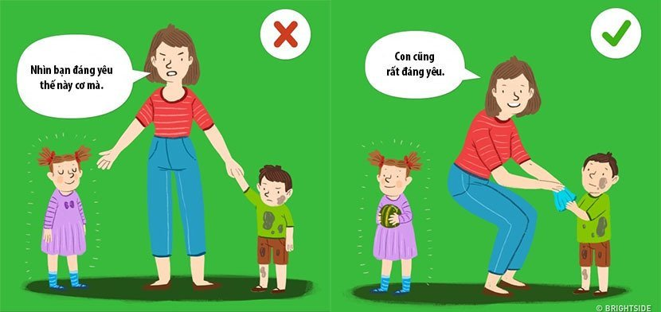
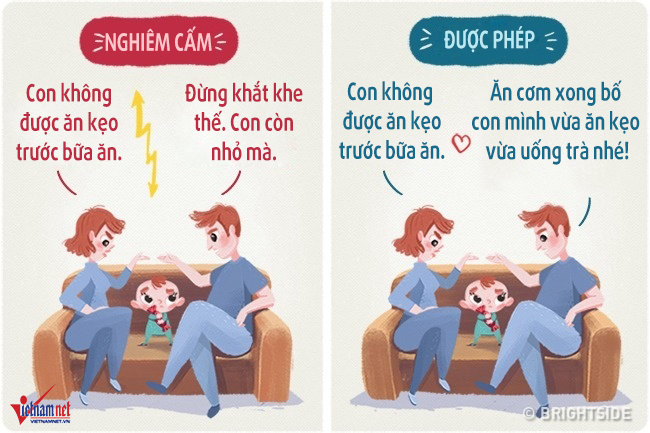
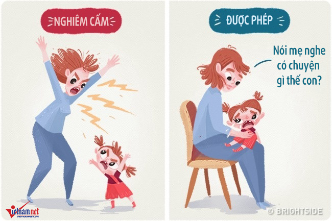
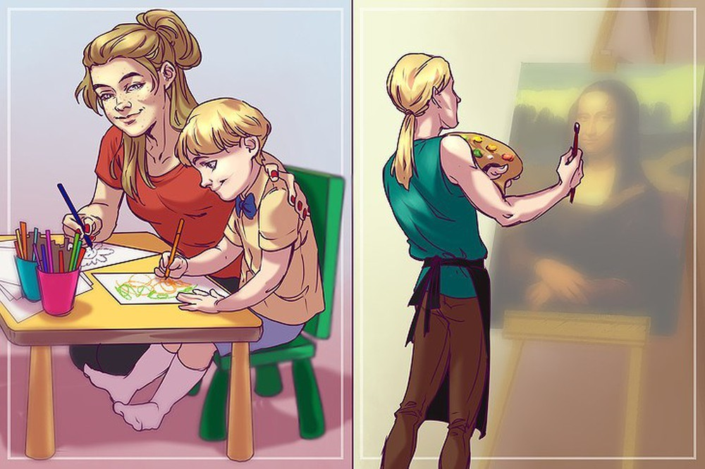
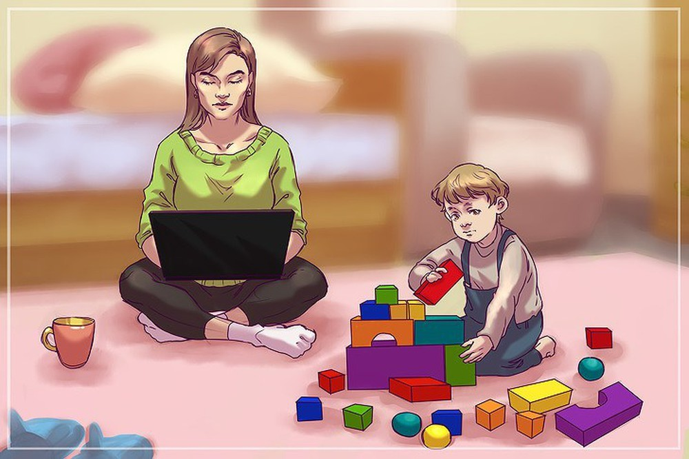
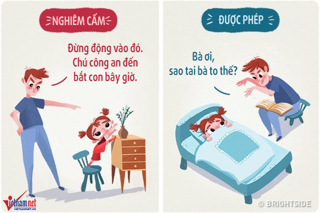

10 sai lầm dạy con của bố mẹ khiến trẻ trở nên rụt rè, hư hỏng, thất bại trong tương lai
Nhiều cha mẹ luôn cho rằng việc kiểm soát hành vi, khen con là số 1, tránh những vấn đề nhạy cảm là cách tốt nhất giúp con cái phát triển và trưởng thành. Nhưng thực ra, đó lại là những điều hoàn toàn sai lầm.
Dưới đây là 10 sai lầm phổ biến cha mẹ thường mắc phải:
Kiểm soát mọi hành vi của trẻ
Các nhà khoa học thuộc Hiệp hội Tâm lý Mỹ đã chỉ ra rằng, những phụ huynh kiểm soát con thái quá sẽ khiến trẻ không biết cách tự quản lý cảm xúc của bản thân. Khi được cha mẹ quá bao bọc, trẻ sẽ gặp nhiều vấn đề về khả năng thích nghi xã hội, kết bạn hay phân tích hành vi.
Do vậy khi nhận thấy trẻ có thể xử lý các tình huống mà không cần đến sự giúp đỡ, cha mẹ hãy để trẻ tự làm điều đó. Phụ huynh có thể dạy trẻ vượt qua những tình huống khó khăn nhưng không nên áp đặt. Trò chuyện với trẻ về cảm xúc và giúp trẻ đối phó với căng thẳng sẽ giúp ích cho trẻ về lâu dài.
Trừng phạt bằng đòn roi
Nhiều cha mẹ tin rằng đòn roi là cách kỷ luật tốt nhất cho con trẻ. Tuy nhiên, theo các chuyên gia, việc lạm dụng thể chất dẫn đến rất nhiều hậu quả, trong đó có hành vi chống đối xã hội, rối loạn tâm lý, nghiện rượu bia và chất kích thích.
Hay so sánh trẻ với “con người ta”

Việc so sánh con với những người khác là điều nhiều cha mẹ mắc phải. “Jack ngoan thế kia mà sao con hư vậy!”, “Emily có thể đếm đến 100, còn con thì chỉ đếm được đến 10″…
Các nhà tâm lý học cho rằng cha mẹ không nên lặp lại sai lầm này bởi việc so sánh như vậy sẽ hạ thấp lòng tự trọng và giá trị của trẻ. Nó cũng tạo ra khoảng cách giữa cha mẹ và con cái bởi chúng cảm thấy bị mất niềm tin. Trẻ cần tình yêu thương và sự ủng hộ của cha mẹ trong mọi tình huống. Vì vậy hãy nói với con những điều tích cực, tránh khiến trẻ thất vọng hay chán nản.
Nuôi con không nhất quán

Một ngày cha mẹ yêu cầu con phải tự dọn dẹp đồ chơi, rồi ngày hôm sau cha mẹ làm giúp con mà không nói lời nào. Hôm qua cha mẹ đang rất tức giận và trừng phạt trẻ vì một trò đùa vô hại, nhưng hôm nay cha mẹ lại cảm thấy vui vẻ và để chúng làm bất cứ điều gì chúng muốn.
Khi mẹ đang cau mày thể hiện sự không vừa ý với hành vi của trẻ, bố lại nhìn trẻ mỉm cười. Đây là những ví dụ về môi trường không ổn định khiến trẻ bối rối không biết mình có đang làm đúng những gì cha mẹ mong đợi hay không.
Các nhà khoa học cho rằng sự không nhất quán như vậy có thể tác động tiêu cực đến sự phát triển lòng tự trọng, gây tổn thương và trầm cảm. Đó là lý do tại sao cha mẹ nên đặt ra một số quy tắc và giới hạn trong gia đình để trẻ hiểu về những gì sắp xảy ra và chuẩn bị cách phản ứng.
La hét

Hãy tưởng tượng rằng con bạn đang làm sai. Bạn yêu cầu chúng bình tĩnh một lần, hai lần, ba lần rồi không chịu được. La hét thực sự là một phương pháp hiệu quả giúp chúng ta thoát khỏi cảm xúc sôi sục trong vài giây. Và một số phụ huynh tin rằng la hét là cách tốt nhất để giải quyết vấn đề ngay lúc đó. Nhưng cha mẹ đã bao giờ tự hỏi về hậu quả của kiểu nuôi dạy con như vậy chưa?
Thực tế, la hét có thể khiến hành vi của trẻ trở nên tệ hơn, thậm chí đó còn là nguyên nhân của chứng trầm cảm ở trẻ.
Kỳ vọng quá cao

Không có cha mẹ nào muốn con mình trở thành kẻ thất bại. Tuy nhiên, một số người lại đặt ra kỳ vọng quá cao. Những kỳ vọng sẽ thúc đẩy trẻ thể hiện tốt hơn, nhưng nếu mục tiêu không thực tế, trẻ có thể mắc các chứng rối loạn như mất ngủ, giận dữ, mệt mỏi hoặc lo lắng.
Ryan Hong, một nhà khoa học của Đại học Quốc gia Singapore, giải thích: “Trẻ em trở nên sợ mắc lỗi khi cha mẹ mong chúng hoàn hảo. Hãy dành chút thời gian và suy nghĩ xem liệu bạn có đốc thúc con nhiều hơn mức cần thiết hay không”.
Tự hỏi tại sao con mình rất tệ?

Có một câu nói rất hay: “Bạn sẽ gặt hái những gì bạn gieo trồng”. Và nó hoàn toàn phản ánh mối quan hệ giữa cha mẹ và con cái. Các nghiên cứu khoa học chỉ ra rằng trẻ em hấp thụ các giá trị từ cha mẹ hơn bất kỳ ai khác. Và chúng cũng sẽ sao chép hành vi của cha mẹ. Vì vậy, nếu trẻ dành phần lớn thời gian cho cha mẹ và có hành vi xấu, cha mẹ hãy tự nhìn lại bản thân mình đầu tiên.
Nếu cha mẹ sợ xã hội là nguồn tác động chính đến trẻ, các chuyên gia cũng khẳng định rằng trường học hay môi trường bạn bè có chức năng chính là củng cố kiến thức và những giá trị mà trẻ đã nhận được ở nhà.
Thường xuyên dọa dẫm

Đôi khi phụ huynh tỏ ra hung dữ để trẻ sợ và điều chỉnh hành vi. Ví dụ: “Nếu con không ngừng lại, mẹ sẽ vứt con cho người đàn ông kia và ông ta sẽ nhốt con đấy!”. Chiến thuật dạy con này có thể khá hiệu quả, nhưng các nhà tâm lý học khuyên phụ huynh không nên dùng.
Các nhà khoa học giải thích rằng, trẻ em không thể nghĩ về hành vi của chúng khi chúng sợ hãi. Trẻ cũng sẽ sợ cảnh sát, bác sĩ và những người khác mà cha mẹ sử dụng cho mục đích này. Hơn nữa, chúng sẽ sợ hãi nhiều hơn khi não bộ đã quen xử lý nhanh thông tin gây sợ hãi. Do vậy, tốt hơn là tìm những cách khác với kết quả có lợi hơn để kỷ luật con trẻ.
Tránh mọi chủ đề nhạy cảm
Một số cha mẹ có xu hướng tránh thảo luận các chủ đề liên quan đến giới tính và tình dục với con. Ngay cả khi con đã là thanh thiếu niên, họ vẫn nghĩ chủ đề này quá nhạy cảm. Họ hy vọng con sẽ tự tìm hiểu ở trường hoặc từ bạn bè. Tuy nhiên, theo nghiên cứu khoa học, quan điểm này thể hiện sự vô trách nhiệm của phụ huynh.
Việc cha mẹ thảo luận về quan hệ tình dục với con cái là điều thực sự quan trọng.
Luôn cho con là số 1
Nhiều cha mẹ nói câu “Con là người đặc biệt và duy nhất trên thế giới này” vốn mong muốn nâng cao sự tự tin trong trẻ. Mục đích này rất đúng đắn, nhưng nghiên cứu của các nhà khoa học ở Đại học Tiểu bang Ohio (Mỹ) đã cảnh báo về hậu quả bất ngờ của những câu nói tương tự.
Brad Bushman, đồng tác giả của nghiên cứu cho rằng việc khích lệ trẻ là rất quan trọng. Tuy nhiên, nếu nhấn mạnh thường xuyên và tâng bốc thái quá, bạn có thể khiến trẻ trở nên kiêu căng và cho bản thân là quan trọng nhất. Do vậy, phụ huynh cần chú ý tìm điểm cân bằng.
Theo Vietnamnet
BÀI VIẾT LIÊN QUAN
- 10 sai lầm dạy con của bố mẹ khiến trẻ trở nên rụt rè, hư hỏng, thất bại trong tương lai
- TRANH CANVAS ĐẸP HỘI TỤ ĐẦY ĐỦ CÁC YẾU TỐ CHO NỘI THẤT CHUNG CƯ
- Lựa chọn tranh theo tuổi
- Mẹo Nhỏ Giúp Nhà Bạn Luôn Gọn Gàng Và Ngăn Nắp
- Mực in uv ( violet ultra ): Thành phần cấu tạo và cách sử dụng trong quá trình in
- Ai Nói Trắng Đen Nhàm Chán?